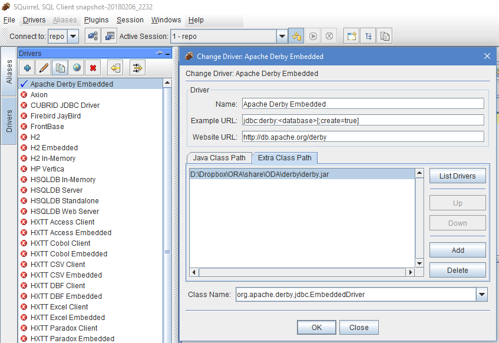

|
|
This was first published on https://blog.dbi-services.com/oda-lite-what-is-this-odacli-repository (2018-02-23)
Republishing here for new followers. The content is related to the the versions available at the publication date
When ODA Lite was introduced, with ODA X6-2 S/M/L, and now with ODA x7-2 S/M, a new ‘odacli’ was there to manage it. It will probably replace the oakcli for ODA HA as well in the future. One big difference: it uses a repository to record the configuration and the operations. I don’t really like it because when something fails you are blocked. Oracle Support can modify the directory, but they ask for an access to the machine for that and this is not easy in secured environments. Anyway, I really don’t understand why another repository has been introduced. We already have the Oracle Inventory, the Grid Infrastructure resources, the Linux /etc files,… And now we have a closed repository which controls everything, accessible only with the very limited odacli commands which are not the best example of automation code and error handling.
This post is about viewing what is inside. You may also want to update it in case you have a problem. I can’t tell you not to do it: this blog has readers who fixed critical issues by editing the binary data in system files, so changing some metadata in an embedded SQL database is not so dangerous. On the other hand, you take the risk to mess up everything. So better contact Oracle Support of you are not 142% sure about what you do. But when the support is long to answer, asks a remote access, or has no other solution than re-image the ODA, you may have to find other alternatives. Just limit yourseld to what you know you can do without risk.
So, this repository is stored in an embedded JavaDB which is, as far as I understand it, An Apache Derby database recolored in red by Oracle. There’s a jdbc driver to access it.
You find the repository on your ODA in the following directory:
/opt/oracle/dcs/repo
You will probably copy the directory elsewhere to look at it. And you may do that with the DCS agent stopped.
I used SQuirreL SQL Client to read this database:
Download SQuirreL SQL Client: squirrel-sql-snapshot-20180206_2232-standard.jar from https://sourceforge.net/projects/squirrel-sql/files/latest/download and install it.
Download derby.jar from https://db.apache.org/derby/derby_downloads.html
Run SQuirreL SQL Client, and add the derby.jar: 
Connect to it. If you still have the repo at the original place, the URL is jdbc:derby:/opt/oracle/dcs/repo/node_0. There is no user and no password.
Then, in the ‘APP’ catalog, you can browse the tables:
You probably want to see the data model for those few tables. I did it on a 12.1.2.11.0 repository. I used SchemaSpy (http://schemaspy.org/) which is awesome because it uses the awesome Graphviz (https://www.graphviz.org/) for the visual representation. If you want to do the same, here is how I did it:
export PATH=$PATH:"/cygdrive/c/Program Files (x86)/Graphviz2.38/bin" java -jar schemaspy*.jar -t derby -db ./repo/node_0 -dp ./derby.jar -o ODAviz -u "" -cat "APP"
Here are some of the schemas generated if you want to have a look at what is stored in the ODA repository: ODAviz.pub.zip
The schema is very simple. Only a few referential integrity constraints and very simple information.
One additional warning: modifications here are not supported by Oracle, and that may even be forbidden as the Capacity On Demand core count is also stored there.
|
|
{kind=link}
{kind=link}
To debug metadata inconsistencies in derby db, gather TFA logs, it will zipped above node 0 dir to debug further by support.